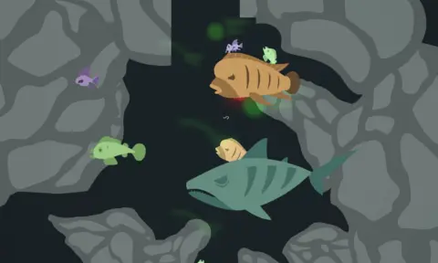
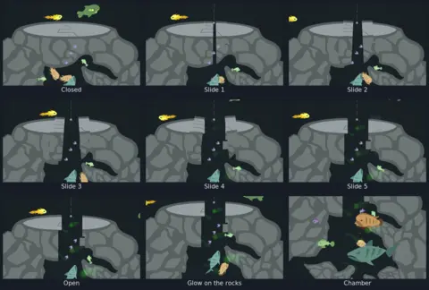
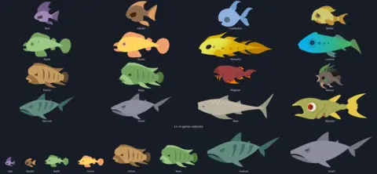
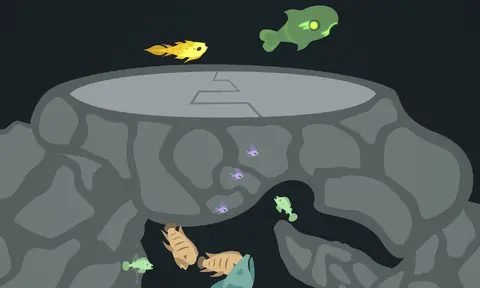

The Silo
Version 2.3.0
What it does
Lower a cast lure to the Missile Silo in the deep trench to open its hatch. Inside the flooded shaft, you can catch Veyl, Radik, Ferrex and Garrusk using the usual lure, bait and catch rules.
Controls
- Bring a rod and boat that can reach the trench. Use a light to find the entrance and bring a cast lure within 250 room pixels of the hatch.
Gallery








Technical datasheet
| Package type | ModKit |
|---|---|
| Manifest file | jamm-mod.json |
| APIs used | ModKit Area API, Fish and Catalog APIs, composed sprite recipes and custom object events. |
| Assets and scripts added | 5 objects (4 fish and 1 hatch controller), 8 composed sprites and 11 standalone scripts in the source build on a clean base. The scripts include 8 fish hooks, 1 area declaration, 1 initializer and 1 Fish API registration stub. |
| Save-file behaviour | The open flag is written as jamm-silo:launch-shaft=1 in [JAMM_Areas] in the active slot's sdata<N>n_beta.ini. Fishalog progress uses [JAMM_Catalog] in the native slot save. |
| Compatibility | Targets the August 2023 legacy VM archive. The follow anchor supports moves of the MissileSilo, including Cave Expansion's relocation. JAMM reports overlapping room edits as CGF-AREA-001 and follows the latest surviving move when mods compete for the landmark. |
How it works
The launch-shaft Area API declaration places native cave rocks, Geiger lights and a custom hatch controller in NewWorld. Its follow anchor resolves the existing MissileSilo instance and translates the shaft with it. JAMM configures the placed instance and keeps MissileSilo's native object events. The controller draws the animation using the resolved hatch's rotation and scale.
A nearby cast lure triggers a 1.55-second opening. One steel plate slides into its frame while bubbles rise and the Geiger lights fade in. The static rock sits behind the lure, and a shallow rock lip at the mouth occludes the lure, line and fish as they cross. The closed mask blocks the lure through the slide. At the end, the controller switches to a separate collision mask with a passage through the shaft.
JAMM composes the sprites during the build from the player's own vanilla frames and the package's original SVG shapes. Ferrex pairs a shortened copper body with teal markings, a swept dorsal fin and a forked tail.
The four species spawn in separate within rectangles in the shaft. The Area API finds free-water points after other profile edits and the area's solids are applied. Create hooks enable deep-water behaviour. Step hooks call wall recovery, guide fish toward their home water and cap movement to limit tunnelling through the shaft walls.
Files in the package
README.mdhooks/deep_water.gmlhooks/hatch_create.gmlhooks/hatch_draw.gmlhooks/hatch_step.gmlhooks/shaft_step.gmljamm-mod.jsonparts/bands.svgparts/door-detail.svgparts/door-mask.svgparts/ferrex-body-mask.svgparts/ferrex-dorsal-mask.svgparts/ferrex-fin-mask.svgparts/gills.svgparts/hatch-frame.svgparts/pits.svgparts/rim-mask.svgparts/scutes.svgparts/shaft-shadow-mask.svg